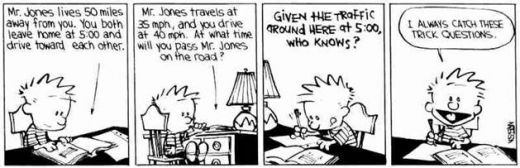

Current Teaching
I will be teaching a graduate course on arithmetic statistics for the London Taught Course Centre from 17 February - 17 March, 2025. Here are the course notes and problem sheets.
Past Teaching at Emory University
Instructor of record
| Spring 2021 |
Instructor for Math 111-3 (Calculus I) |
| Fall 2020 |
Instructor for Math 111-6 (Calculus I) |
Mentoring and supervision
| Spring 2023 |
Mentor for Directed Reading Program on Clutch hitting (student: Aileen He) |
| Spring 2022 |
Mentor for Directed Reading Program on Baseball analytics (student: Ezra Arovas) |
| Fall 2021 |
Mentor for Directed Reading Program on Elliptic curves (3 students) |
| Spring 2021 |
Mentor for Directed Reading Program on p-adic numbers (4 students) |
Teaching assistant and grading
| Spring 2020 |
TA for Math 221 (Linear Algebra) |
| Fall 2019 |
TA for Math 221 (Linear Algebra) |
| Fall 2019 |
Grader for Math 250 (Foundations of Mathematics) |
| Spring 2019 |
Grader for Math 212 (Differential Equations) and Math 250 (Foundations of Mathematics) |
| Fall 2018 |
Grader for Math 328 (Number Theory) and Math 250 (Foundations of Mathematics) |